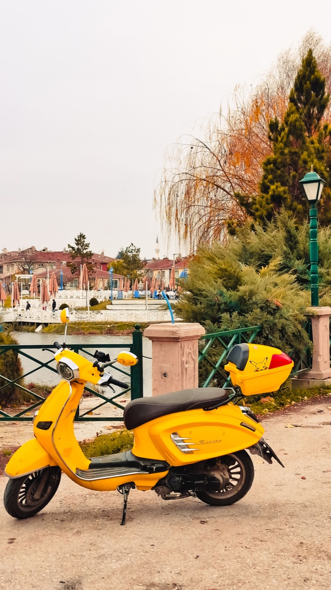
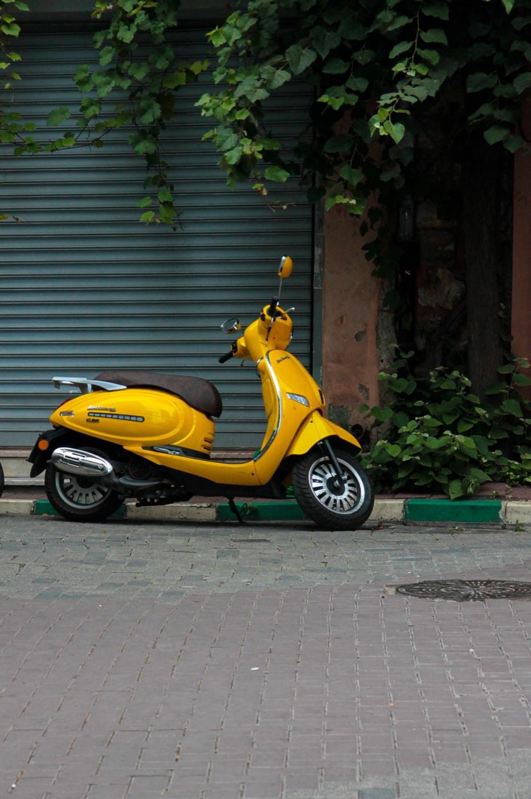

Как защитить байк от кражи во Вьетнаме

Абсолютной защиты не существует, но большинство рисков снижается несколькими привычками. Главное — не оставлять байк там, где его легко незаметно укатить или погрузить, и не рассчитывать только на штатный замок.
Выбирай парковку, а не свободный угол
У отеля, торгового центра, рынка или кафе ищи парковщика, шлагбаум, талон или охраняемую зону. Запомни место и сфотографируй байк. Если сотрудник переставляет технику, не оставляй ключ в замке без необходимости и уточни, где получать байк.

Минимальный набор защиты
- всегда выключай зажигание и блокируй руль;
- используй заметный дисковый замок или прочную цепь;
- на ночь крепи байк к неподвижной опоре, если парковка не охраняется;
- не держи документы и запасной ключ под сиденьем;
- не оставляй телефон, сумку и шлем на виду.
Для дискового замка полезен яркий трос-напоминатель на руль. Иначе легко забыть о блокировке и повредить тормозной диск при старте.
Где риск выше
Настораживают пустые боковые улицы, тёмные участки без камер, парковка на весь день у пляжа и места, где никто не контролирует въезд. Если оставляешь байк надолго, лучше пройти несколько минут от официальной парковки, чем поставить его прямо у нужной точки без присмотра.
Что хранить в телефоне
Сфотографируй регистрационный документ, номерной знак, общий вид байка и характерные царапины. Оригинал документа храни так, как требует конкретная поездка и местные правила, но цифровая копия поможет быстро объяснить ситуацию и идентифицировать технику.
Если байк пропал
- Сначала уточни у парковщика, охраны и ближайших заведений: во Вьетнаме байки часто переставляют.
- Проверь соседние ряды и выходы с парковки.
- Попроси сохранить записи камер.
- Если байк действительно исчез, обращайся в полицию с документами, номером и фотографиями.
Не пытайся самостоятельно конфликтовать с человеком, которого подозреваешь. Зафиксируй место и обращайся к сотрудникам парковки или полиции.
Короткий вывод
Лучшая защита — охраняемая парковка плюс два независимых препятствия: блокировка руля и отдельный замок. Эта минута перед уходом дешевле любой попытки восстановить документы и байк.
О том, как выбирать место у пляжа, отеля и магазина, читай в статье про парковку в Нячанге.